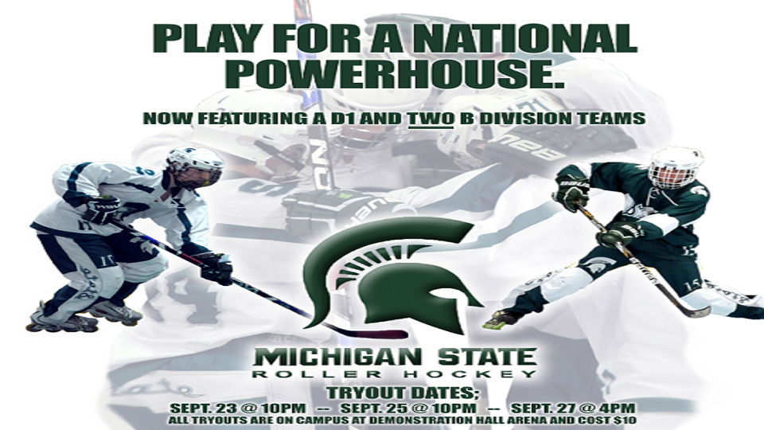

Ryan Werner
Welcome to my portfolio. Please take a look at my past projects and accomplishments.
-
I have accepted in internship position at Plante Moran for the summer of 2015 as an auditor.
-
I am a former member of the youth USA Inline Hockey team. We won a total of three world championships.
-
This is a video that I created for class. It is a montage of an athlete training for a game day.
-

This is a flier I created for the MSU Roller Hockey team using Photoshop.
-
This is a video that I created just for fun. It shows off my editing skills in Adobe Premiere.
In 2014, the MSU Roller Hockey team made it all the way to the national championship game for the first time in history, losing only by one goal in the final minute. We greatly exceeded expectations. This is the accomplishment I am most proud of.
I am currently a senior at Michigan State University, double-majoring in Accounting and Media & Information. I am also an assistant captain on the MSU Roller Hockey Team, who were national runners-up in 2014.
In addition to hockey, I enjoy designing, editing videos, writing, playing video games, watching movies, and running.
Here is a link to my Resume.
Please contact me if you have any questions about me or my resume:
Ryan Werner
145 Collingwood Drive Apartment 25
East Lansing, Michigan 48824
wernerry@msu.edu
586-295-7505
I am from Harrison Township, which is a big boating town located on Lake St. Clair.
I am an assistant captain on the MSU Roller Hockey team. In 2014, we were national runners up.